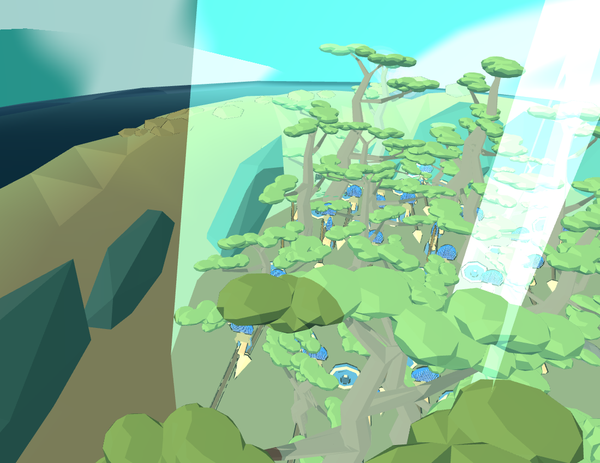
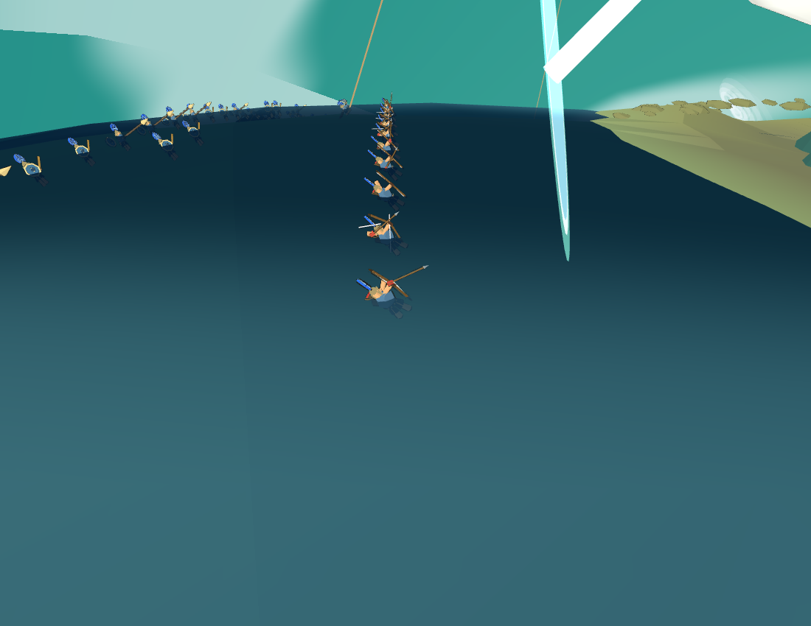

实际 Web 8931 场景 · 传统蓝盔战船兵 · 2026-09-09T20-56-12.662Z
50 名蓝盔全部真实可见；提前靠近的舰队没有抬鲲。隐蔽后等待 10 秒没有射箭；真实扫描和升鲸触发伏击后，原攻击发射 38 箭。伏击本身没有启动重甲空降。
全员与岛面朝向一致；扣除站位抬高后，松冠高度余量最小 5.66 厘米。
完整报告与源哈希 · 范围与复验方法 · 松树模型接入页 · 松林布局页
伏击出阵到原地表阵位的接续仍待完成。阶段与发射通过不等于运动无跳变；未验证全树干、横枝、兵器的逐帧三角净空，也未改 Godot。


| time alone cannot discover whale or ambush | 通过 |
| concealment retains visible actor and lowers body pose | 通过 |
| concealed actor follows moving cover anchor | 通过 |
| discovery event distinct from ambush | 通过 |
| ambush restores body pose and identity | 通过 |
| reset clears event and pose state | 通过 |
| approaching soldier does not inherit island lift | 通过 |
| concealment presentation respects casualty pose | 通过 |
| insufficient real cover blocks instead of hiding or attacking | 通过 |
| actual garden has at least 50 anchored cover slots | 通过 |
| early nearby fleet cannot reveal whale before troops hide | 通过 |
| actual traditional ship troops reach concealment | 通过 |
| concealed actors stand on island local up | 通过 |
| concealed visible equipment fits below measured canopy | 通过 |
| all 50 initial troops are blue and genuinely present | 通过 |
| actual ten-second hidden wait fires no arrows and no heavy deployment | 通过 |
| actual whale rise and fleet lock drive discovery | 通过 |
| ambush itself does not start heavy drop | 通过 |
| ambush resumes original traditional attack and preserves soldiers | 通过 |